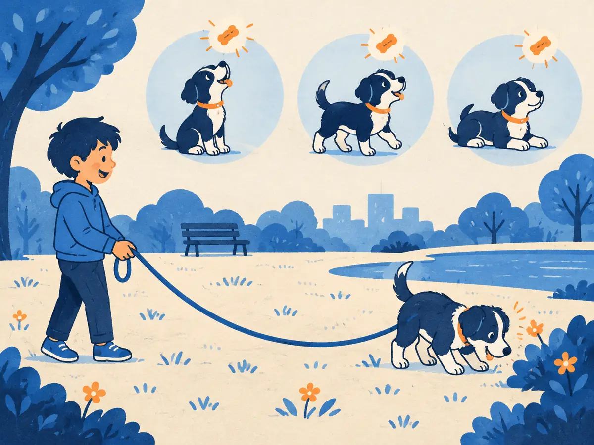

RLHF with PPO
Reinforcement learning from human feedback closes the loop. The model writes answers, the reward model grades them, and the model is nudged toward higher grades without drifting too far from where it started. This is the recipe behind InstructGPT and the first ChatGPT.
By the end you can
- Walk through one round of RLHF and name the four models involved.
- Explain the KL penalty $r - \beta\,\mathrm{KL}$ and compute a penalized reward by hand.
- Say what the advantage and PPO's clipped objective do, and why RLHF is expensive.
Take your best guess. Being wrong now helps the right answer stick later.
During RLHF, what does the model actually learn from?
- New human-written ideal answers, like in SFT
- Its own sampled answers, each scored by the reward model
- The reward model's weights, copied in
- Only the fixed chosen/rejected pairs from the preference dataset
Why does RLHF penalize the model for drifting away from the SFT model it started from?
- To make training faster
- Because the SFT model is always right
- To save memory
- The reward model is only trustworthy near the kind of text it was trained on; far away, the policy can exploit its mistakes
The objective
We now have a policy to improve (the SFT model, M3.1) and a reward model $r_\phi$ that scores any response (M3.2). RLHF maximizes the reward the policy earns on fresh prompts, minus a penalty for moving away from a frozen reference model $\pi_\text{ref}$, which is a copy of the SFT model:
$$\max_{\theta}\;\; \mathbb{E}_{x \sim \mathcal{D},\; y \sim \pi_\theta(\cdot \mid x)}\big[\, r_\phi(x, y) \,\big] \;-\; \beta\,\mathrm{KL}\big(\pi_\theta(\cdot \mid x)\,\big\|\,\pi_\text{ref}(\cdot \mid x)\big)$$- $x \sim \mathcal{D}$: a prompt from the training set (prompts only, no answers).
- $y \sim \pi_\theta(\cdot \mid x)$: a response sampled from the current policy with parameters $\theta$.
- $\mathrm{KL}$: how different the policy's next-token distributions are from the reference's (P1.6). It's zero only when they match.
- $\beta$: the strength of the leash. Too small and the policy reward-hacks; too large and it barely moves. Values around 0.01 to 0.2 are common, tuned per setup.
In practice the KL is estimated from the sampled tokens themselves, and folded into the reward:
$$R(x, y) = r_\phi(x, y) \;-\; \beta \sum_{t} \Big(\log \pi_\theta(y_t \mid x, y_{<t}) - \log \pi_\text{ref}(y_t \mid x, y_{<t})\Big)$$Each term in the sum is how much more likely the policy found that token than the reference did. Averaged over many samples, the sum estimates the KL divergence: its expected value is exactly the KL.
Worked example: the penalized reward
The animation's numbers. The reward model gives $r = 2.0$. For the response's three tokens the policy's log-probs are $[-0.5, -1.0, -0.2]$ and the reference's are $[-0.9, -1.2, -0.3]$. Use $\beta = 0.1$.
- Per-token gaps $\log\pi_\theta - \log\pi_\text{ref}$: $0.4,\ 0.2,\ 0.1$.
- KL estimate: $0.4 + 0.2 + 0.1 = 0.7$.
- Penalty: $\beta \times 0.7 = 0.07$.
- Reward used for learning: $R = 2.0 - 0.07 = 1.93$.
A single sample's estimate can come out negative when the policy happens to pick tokens the reference liked more. Its average over samples, the true KL, never is.
A 4-token response gets $r = 1.5$. Policy log-probs: $[-0.2, -0.4, -0.1, -0.3]$. Reference log-probs: $[-1.2, -0.9, -0.6, -0.8]$. Use $\beta = 0.05$.
- KL estimate (sum of the gaps):
- Penalty $\beta \times \mathrm{KL}$:
- Penalized reward $R$:
- The value model expected $V = 1.6$. Advantage $A = R - V$:
The reward was positive, yet the advantage is negative, so PPO makes this response less likely. It was worse than the policy usually does on this prompt.
Advantages and the value model
The simplest policy-gradient idea is: raise the log-probability of each sampled response in proportion to its reward. But raw rewards are noisy, and if every reward is positive, everything gets pushed up. The fix is to subtract a baseline, what we expected to get:
$$A = R - V(x)$$$A$ is the advantage: positive means better than usual, so make it more likely; negative means worse, so make it less likely. $V$ comes from a value model (the “critic”), a fourth network, often initialized from the reward model and trained by regression to predict $R$.
Real implementations predict a value at every token and compute per-token advantages with Generalized Advantage Estimation (GAE; Schulman et al., 2015). The idea is the same: reward minus expectation.
PPO: small, safe steps
Sampling text is expensive, so we want several gradient steps per batch of samples. But after the first step the policy is no longer the one that generated the data. Proximal Policy Optimization (Schulman et al., 2017) corrects for this with the probability ratio, and caps how much it may count:
$$L^{\text{CLIP}}(\theta) = \mathbb{E}_t\Big[\min\big(\rho_t(\theta)\,A_t,\;\; \mathrm{clip}\big(\rho_t(\theta),\, 1-\epsilon,\, 1+\epsilon\big)\,A_t\big)\Big], \qquad \rho_t(\theta) = \frac{\pi_\theta(y_t \mid \cdot)}{\pi_{\theta_\text{old}}(y_t \mid \cdot)}$$$\rho_t$ is the ratio (called $r$ in the animation, not to be confused with the reward) of the new to the old probability of token $y_t$, $A_t$ is its advantage, and $\epsilon$ (typically 0.2) sets the width of the allowed band. PPO maximizes this, so in code you minimize its negative.
Explain like I'm 5

You're teaching a puppy tricks. When it does something good, it gets a treat. Something better than usual gets an extra-happy treat; something worse gets none.
The puppy is on a long, stretchy leash. It can wander and try new things, but if it runs too far from you the leash pulls it back. And you only let it change its habits a little at a time.
Treats = rewards. The leash = the KL penalty. “A little at a time” = PPO's clipping.
Where it breaks: the model gets one score for a whole answer, from a judge (the reward model) that can be fooled. A puppy's treat comes from you, and you know what you meant.
InstructGPT: the recipe that made it work
Ouyang et al., 2022 (“Training language models to follow instructions with human feedback”) ran the three stages on GPT-3: SFT on roughly 13k prompts with demonstrations, a reward model trained on comparisons for roughly 33k prompts, and PPO on roughly 31k prompts. The headline result: labelers preferred outputs from the 1.3B InstructGPT model over those of the 175B GPT-3, a model more than 100 times larger.
They also mixed some pretraining gradients into the PPO updates (“PPO-ptx”) to reduce the alignment tax, the drop in scores on standard NLP benchmarks that plain RLHF caused. The same recipe underlies the original ChatGPT.
Why RLHF is expensive, and finicky
- Four models in memory: policy (trained), value model (trained), reward model (frozen) and reference (frozen). For a 70B policy that's on the order of four 70B networks, plus optimizer state for the two trained ones, which is several times their weights (M2.5).
- Generation inside the training loop: every round samples full responses token by token, which is slow and often dominates step time. Modern RL frameworks run a separate fast inference engine just for this.
- Many knobs and failure modes: $\beta$, $\epsilon$, two learning rates, advantage settings and batch sizes. Runs can reward-hack, see the KL blow up, or collapse to repetitive text.
Hence the alternatives in the next lessons. DPO (M3.4) needs no reward model and no sampling. GRPO (M3.5) drops the value model by comparing each sample with the average of a group of samples for the same prompt.
Name the four models in PPO-based RLHF and what each one is for.
Connect to P1.6: the penalty $\beta\,\mathrm{KL}(\pi_\theta \,\|\, \pi_\text{ref})$ is zero exactly when…
- The policy's distributions are identical to the reference's
- The reward is at its maximum
- $\beta = 1$
- The policy always picks its single most likely token
With $\epsilon = 0.2$, a token has advantage $A = +2$ and ratio $\rho = 1.5$. What is its clipped objective $\min(\rho A,\ \mathrm{clip}(\rho, 0.8, 1.2)\,A)$?
- 3.0
- 1.5
- 2.4
- 0
Which models are updated by gradient steps during PPO-based RLHF?
- All four
- Only the reward model
- The policy and the reference
- The policy and the value model
A sampled response gets penalized reward $R = 3.0$, but the value model predicted $V = 3.4$. What does PPO do with it?
- Makes it more likely, because the reward is positive
- Makes it less likely, because the advantage $R - V = -0.4$ is negative
- Ignores it, because only negative rewards are used
- Retrains the reward model on it
Key takeaways
- RLHF loop: the policy samples, the reward model scores, and PPO updates the policy. It learns from its own outputs.
- A KL penalty to a frozen reference keeps the policy near the SFT model: $R = r - \beta\,\mathrm{KL}$. It's the main defence against reward hacking.
- The advantage $A = R - V$ (reward minus a value model's expectation) decides the direction of each update.
- PPO's clipping keeps the ratio $\pi_\theta/\pi_\text{old}$ within $1 \pm \epsilon$, giving small, safe steps and several epochs per batch.
- Cost: four models in memory and generation inside the loop. That's what motivates DPO and GRPO.
Adding cards schedules your first spaced review.